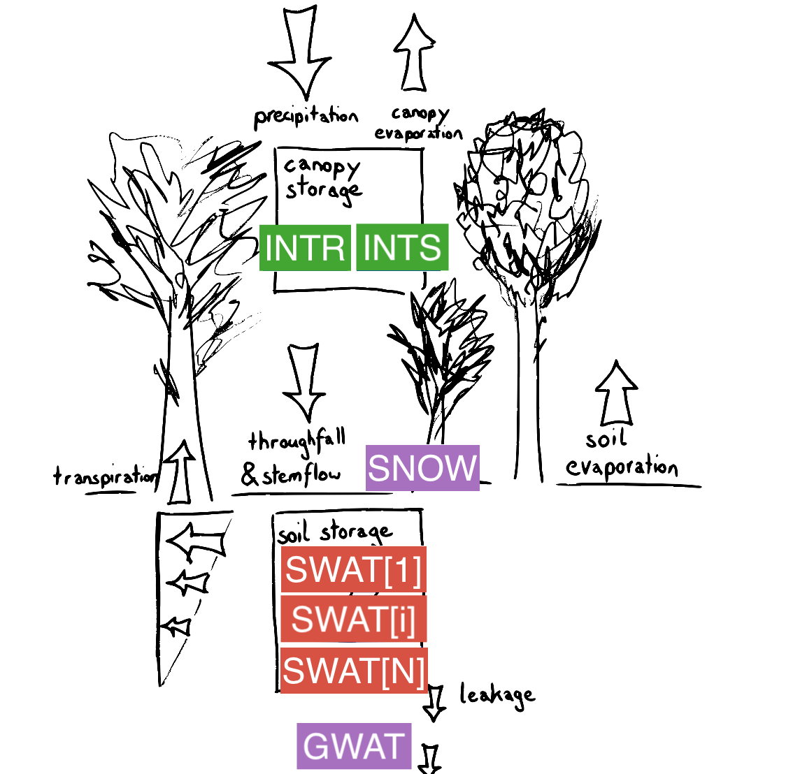

SVAT Model
Description
LWFBrook90.jl is a 1D Soil-Vegetation-Atmosphere Transfer (SVAT) model, calculating the soil water balance in forest soil. Modelled processes include vertical soil water movement, soil and plant evapotranspiration and temporary storages in snowpack or interception layer.
Vertical soil water movement is modelled using the Richards equations and preferential flow. Mass loss through evaporation from temporary storages (snowpack or interception by vegetation) is included.
Processes and state variables in LWF-BROOK90 are summarised visually in Figure 1 below.

Figure 1: Summary of processes and state variables used in LWFBrook90.jl
Water is stored in the model as:
- intercepted rain (INTR)
- intercepted snow (INTS)
- snow on the ground (SNOW)
- soil water in discretized layers (SWATI, vector)
- groundwater (GWAT)
Additional state variables (SNOWLQ and CC), describe the current status of the snowpack. For details refer to State variables.
Detailed description
LWFBrook90.jl does not try to account for all possible paths of water movement through soil, which is a very complicated subject (McDonnell 1990). As a lumped parameter model it does not move water laterally between subareas. However, it does simulate several different pathways of water movement over or through the soil to streamflow and groundwater (see Flow Chart):
Figure 2: Flow chart of simulated pathways of water movement
- snowmelt and throughfall on impervious areas goes directly to streamflow (SRFL)
- snowmelt and precipitation on variable saturated source areas goes directly to streamflow (SRFL)
- remaining snowmelt and streamflow (SLFL) infiltrates either all to the surface layer or to several layers via vertical pipes or macropores (INFL)
- some infiltrated water can go directly to streamflow as "bypass" flow in pipes (BYFL)
- classic vertical matric flow between soil layers (VRFLI)
- lateral or downslope movement of matric water to streamflow (DSFL)
- vertical drainage of matric water to groundwater (VRFLN)
- discharge of groundwater to streamflow (GWFL)
- deep seepage loss from groundwater (SEEP)
SLFL, INFL, VRFLI, and VRFLN are internal flows. SRFL and BYFL produce streamflow only on the day of precipitation, simulating a streamflow response of less than 24 hours duration. Users generally should choose one or the other of these flows. DSFL produces a response over several days only if VRFL is limited by a low conductivity layer within the profile or VRFLN is limited by setting DRAIN < < 1. VRFL from the bottom of the profile produces a response of several days only if there is no groundwater. GWFL reponse can vary from several to many days. SEEP produces no streamflow at all.
If the surface horizon becomes saturated, infiltration-excess overland flow is simulated as BYFL from the top layer. The input rate (SLFL) is constant over the precipitation interval, which may be a full day for most users. So with saturated hydraulic conductivities usually 200 mm/d or more, such overland flow will be rare.
Vertical water movement out of a layer is a combination of matrix flow, VRFL(I), and the macropore infiltration, SLFL(I). SLFL(I) either becomes BYFL from deeper layers or becomes soil water in deeper layers. VRFL(I) will generally increase with depth as SLFL(I) decreases. Lysimeter users may want to assume that suction lysimeters collect VRFL(I) whereas zero-tension lysimeters collect both VRFL(I) and SLFLI(I).
State variables
| Name | Unit | Description |
|---|---|---|
| GWAT | mm | Groundwater storage below soil layers |
| INTS | mm | Intercepted snow, stored within in the canopy |
| INTR | mm | Intercepted rain, stored within in the canopy |
| SNOW | mm | Water equivalent of snow on the ground (total equivalen, i.e. frozen and liquid) |
| CC | MJ/m2 | Cold content of snowpack on the ground (positive) |
| SNOWLQ | mm | Liquid water content of snow on the ground |
| SWATI (vector) | mm | Soil water volume in a simulated layer |
The "water equivalent" of snow (SNOW, mm) is the depth of water a snowpack would produce if it were all melted; this is the BROOK90 variable that represents the snowpack. The actual depth of snow, assuming a constant snow density (SNODEN), is used only to calculate the amount of the canopy above the snow in subroutine CANOPY. Variable snow density (mass per unit volume) is not simulated in BROOK90. When the snow is colder than 0°C, it has a "cold content" (CC, MJ/m2), which is the energy needed to warm the snow to 0°C. When the snow is at 0°C, part of SNOW can be liquid water (SNOWLQ, mm). The maximum liquid water that can be retained by the snowpack without draining is a constant fraction (MAXLQF) of SNOW.
Implementation
The model is implemented based code from the R package LWFBrook90R and its Fortran source code as well as the original implementation of BROOK90 (v4.8) (www.ecoshift.net/brook/b90doc.html).
LWFBrook90.jl is 100% implemented in Julia. It defines the dynamical system in terms of ordinary differential equations and corresponding (time-varying) parameters and makes use of the package DifferentialEquations.jl for solving the evolution of the system state for a specified time tspan and intial conditions u0.
LWFBrook90.jl is developed with the following objectives in mind:
- [ ] support for stable isotopes (δ¹⁸O and δ²H) by including transport equation and fractionation processes
- [ ] efficient parameter estimation (optimizing computational costs)
- [ ] model flexibility for alternative processes parametrizations (possibly resulting in a flexible model framework)
Currently two mode of operation are distinguished by the flag compute_intermediate_quantities = true. It determines wheter additional, non-essential quantities are computed during simulation. The intent is to optimize computational cost.
LWFBrook90.jl contains two parametrizations of the soil hydraulics: Mualem-van Genuchten and Clapp-Hornberger. They are selected according to the names of the column names in the input data files. ()
Implementation details
LWFBrook90.jl makes use of DifferentialEquations.jl to solve the system of Ordinary Differential Equations (ODE). Each state variable (u) has a corresponding ODE. The ODEs are defined by their right hand side defined in the function f (which sets du that is the rate of change in u). The right hand side f(u,p,t) depends on time t, parameters p (time-dependent or constant), and the state u.
Variable naming generally follows the convention by BROOK90 and LWFBrook90R, but uses additionally a prefix to indicate their dependencies (p_*, p_fT_*, p_fu_* for constant, time dependent or state dependent parameters, u_*, u_aux_* for elementary and auxiliary state variables respectively, and aux_du_* for auxiliary rate of changes of state variables).
Note that some state variables (rain and snow interception storage, u_INTR, u_INTS and snow storage and energy u_SNOW, u_CC, u_SNOWLQ) are updated once per simulation day and other state variables (groundwater and soil water storages u_GWAT,u_SWATI) are solved on a higher resolved time discretization set by the ODE solver, resulting effecively in an operator splitting scheme.
Description of BROOK90 implementation from Ecoshift (TODO: rework this to pertain to LWFBrook90.jl) :
Subroutines EQUIVSLP, SOILPAR, INFPAR, SRFPAR, and RTDEN are called only once, at the beginning of a run, to calculate parameters for solar radiation, soil water, infiltration, source area, and root distribution. Subroutine SOILVAR calculates initial values of soil water variables from PSIM.
The day loop begins by reading the weather for the day as one line from the Data File. Subroutine MSUBSETVARS contains subroutines that calulate derived variables for the day. SUNDS, CANOPY, ROUGH, andPLNTRES are called to get solar, canopy structure, roughness, and plant resistance variables that depend on day of the year. Subsurface heat flux (SHEAT) is always set to zero. Subroutine WEATHER estimates missing values, modifies input data as necessary, corrects weather station wind speed to wind speed above the canopy, and determines daytime and nighttime temperatures and wind speeds. Subroutine SNOFRAC determines the fraction of daily precipitation that is snow (SNOFRC). If there is no snow on the ground, the soil evaporation resistance (RSS) is obtained as function FRSS. When there is snow on the ground, the snowpack temperature (TSNOW) is calculated from cold content (CC). Subroutine SNOVAP then estimates the snow evaporation rate. Subroutine SNOENRGY obtains the energy available for snowmelt (SNOEN) from mean daily temperature. The factor is modified for canopy cover as determined by LAI and SAI. Snow evaporation or condensation depends on the aerodynamic resistances and the vapor gradient; however, an arbitrary reduction factor is required.
Subroutine MSBDAYNIGHT contains routines that calculate the five components of evaporation (see Flow Chart):
- evaporation of intercepted rain (IRVP)
- evaporation of intercepted snow (ISVP)
- evaporation from snow (SNVP)
- soil evaporation (SLVP) from the top soil layer
- transpiration (TRANI) from each soil layer that contains roots
Interception and snow evaporation are reduced later if their sources disappear. These evaporation values are obtained separately for daytime and nightime, then combined into a daily values.
Potential evaporation rates are obtained using the Shuttleworth and Wallace (1985) modification of the Penman-Monteith approach. Daily solar radiation is corrected for slope, is allocated to the daytime, and is converted to average daytime rate. Subroutine AVAILEN calculates available energy (net radiation minus SHEAT=0) at the top (AA) and at the bottom (ASUBS) of the canopy, using a Beers Law extinction coefficient. The three aerodynamic resistances (RAA, RAC, RAS) needed by the Shuttleworth-Wallace method are obtained in subroutine SWGRA, using algorithms of Shuttleworth and Gurney (1990). These resistances depend on leaf area index (LAI), which can vary seasonally, and on canopy height, which determines stem area index (SAI). The canopy surface resistance to transpiration (RSC) for the daytime is obtained in subroutine SRSC; it depends on maximum leaf conductance, reduced for humidity, temperature, and light penetration. At night RSC is the reciprocal of leaf area index (LAI) times minimum leaf conductance (GLMIN). Soil evaporation resistance (RSS) depends on soil water potential in the top soil layer. Subroutine SWPE uses AA, ASUBS, RSC, RSS, RAA, RAC, RAS and the vapor pressure deficit (VPD) to calculate potential transpiration (PTR) and the associated ground or soil evaporation (GER) as given by Shuttleworth and Wallace (1985). Subroutine SWPE is then called again with RSC = 0 to give the intercepted evaporation rate and its associated soil evaporation (PIR and GIR). SubroutineTBYLAYER obtains actual transpiration by layer (TRANI). Actual transpiration is the lesser of potential transpiration and a soil water supply rate determined by the resistance to liquid water flow in the plants and on root distribution and soil water potential in the soil layers. If the actual transpiration is less than the potential, a new, higher GER is calculated by subroutine SWGE. After the MSBDAYNIGHT day-night loop, these evaporation rates are weighted for daytime and nighttime according to daylength (DAYLEN), and the daily average rates are then used in later calculations.
The "precipitation interval" is equal to one day when daily precipitation is provided along with other daily weather data in the Data File; parameter NPINT is then set to 1 and the precipitation loop is passed through once a day. Alternatively, precipitation data at fixed intervals of less than a day can be read from a Precip Interval File. The Precip Interval File can have one line per day, allowing easy reruns with different daily precipitation. Then NPINT is set to the number of precipitation intervals per day; the precipitation loop is passed through NPINT times per day, and a line of the Precip Interval File is read each time. If available, measured flow for the interval can also be input.
In subroutine MSBPREINT, precipitation is separated into rain and snow using SNOFRC. If NPINT = 1, subroutine INTER24 is called twice, once for snow interception and once for rain interception; this routine uses the monthly parameter DURATN, which is the average storm duration in hours. If NPINT > 1, subroutine INTER is used instead, and the precipitation is assumed to occur over the whole precipitation interval. Transpiration (TRAN) for the interval is summed over layers and reduced by the fraction of time the canopy is wet; soil evaporation (SLVP) is GIR when the canopy is wet and GER when it is dry. If a snowpack exists, subroutineSNOWPACK is called to use SNOEN and the rain and snow throughfall to calculate snowmelt (SMLT), cold content (CC), and liquid water content of the snow. Net rain to the soil surface (RNET) is rain throughfall (RTHR) minus rain absorbed by the snowpack (RSNO). Water reaching the ground surface is RNET + SMLT.
Subsurface water movement is determined in several to many iterations per precipitation time-step. Remaining model calculations are done within subroutine MSBITERATE for each iteration loop.
Net throughfall (RNET) plus snowmelt (SMLT) may:
- infiltrate into the soil matrix of the surface horizon (INFLI(1)),
- infiltrate directly to deeper horizons via vertical macropore flow (INFLI),
- go immediately to streamflow via vertical macropore flow followed by downslope pipe flow (BYFLI), or
- go immediately to streamflow via impaction on a variable saturated source area (SRFL).
The fraction of area acting as a saturated source area (SAFRAC) is obtained in subroutine SRFLFR. Source area flow (SRFL) is obtained as SAFRAC plus impervious area (IMPERV) times RNET + SMLT. Infiltration rate (SLFL) is RNET + SMLT - SRFL. The fraction of infiltration to each layer that bypasses the layer and becomes an output via bypass flow (BYFLI) is calculated in subroutine BYFLFR. For each layer, the downslope flow rate by matrix flow (DSFLI) is obtained from subroutine DSLOP. In general, one or more of SRFL, BYFL, and DSFL will be set to zero by the user.
If the water potential difference between layers is less than the parameter DPSIMX, vertical flow (VRFLI) is zero; otherwise subroutine VERT obtains VRFLI between layers from a weighted hydraulic conductivity and the water potential difference between the layers. For the bottom layer, outflow to groundwater is the hydraulic conductivity of the layer times a parameter (DRAIN), which can vary from 0 to 1. This assumes a gravity potential gradient.
Subroutine INFLOW is called to get net inflow into each layer (NTFLI) using parameter DTIMAX as a first approximation for iteration time step. The rate of change of matric potential with water content (DPSIDW) from function FDPSIDW is used with NTFLI in subroutine ITER to obtain the maximum iteration time step (DTI) allowed by two parameters. The parameters are DPSIMX and the maximum allowed change in soil water content (DSWMAX). INFLOW is called again with the new DTI to get the final NTFLI, VRFLI, BYFLI, and matric uptake (INFLI).
Groundwater discharge to streamflow (GWFL) and deep seepage (SEEP) are obtained from subroutine GWATER. GWFL is simulated as a fixed fraction of groundwater each day and SEEP is a fixed fraction of GWFL.
Simulated streamflow is the sum of SRFL, BYFL, DSFL, and GWFL. This can be compared with measured streamflow if that is available.
At the end of each iteration time-step, soil water content of each layer (SWATI) is updated by adding NTFLI * DTI. Groundwater storage is also updated. Then new soil water variables are calculated using function FPSIM and subroutine SOILVAR. Available water (AWAT) is calculated for output as water held in the root zone between field capacity and PSICR.
SWCHEK tests that the SWATI remain between zero and saturation; if not, the program stops. At the end of each day the water balance is checked and the program stops if there is an error greater than 0.003 mm. These crashes should only occur if there are parameter or programming errors.
Implementation roadmap
Some ideas for future development include:
- include models of transport and fractionation processes
- include transport processes within tree stems
- test use of parameter estimation procedures (check external Julia packages)
- refactor code supporting model flexibility
- distinguish Mualem-van Genuchten and Clapp-Hornberger parametrizations more cleanly and reduce redundundancy in code
- split LWFBrook90 code into sub-models:
- one sub-model that precisely reproduces what LWFBrook90R did (w.r.t to adaptive time stepping, operator splitting in state variable updates and manual resetting of variables)
- another sub-model that implements improved implementations of adaptive time stepping (using DiffEq.jl solution domain validity callbacks) and continuous, subdaily variable updates for all state variables